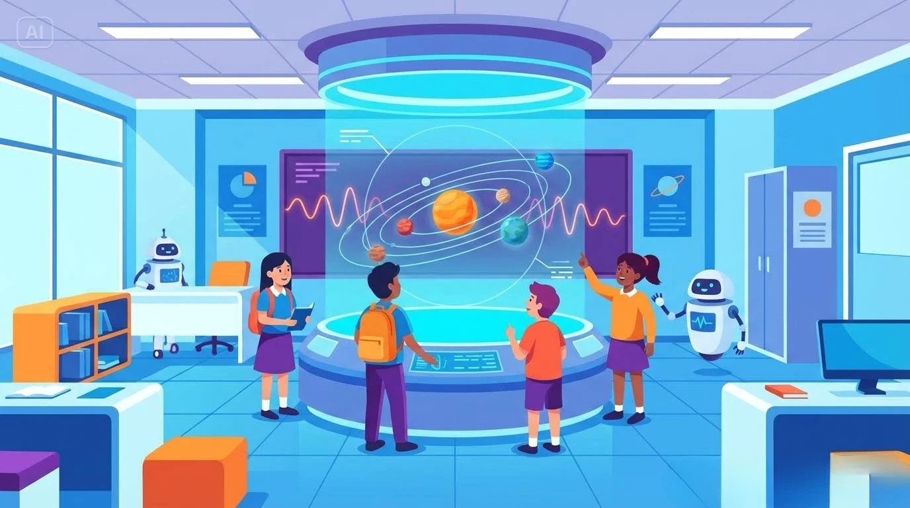
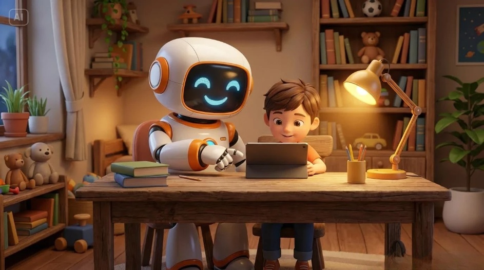
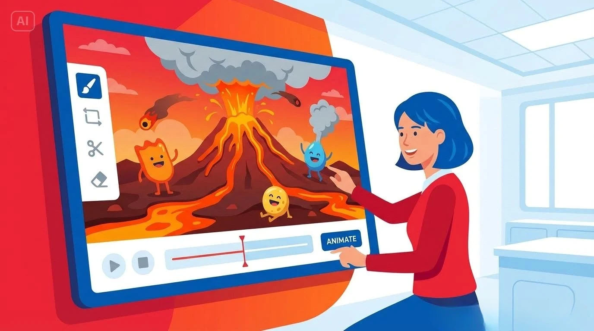
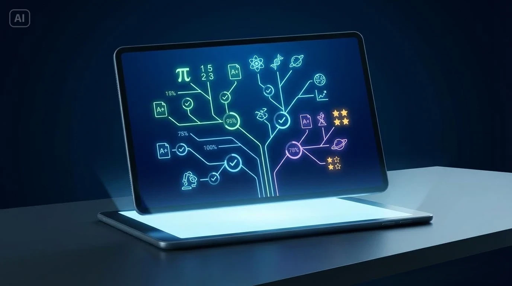
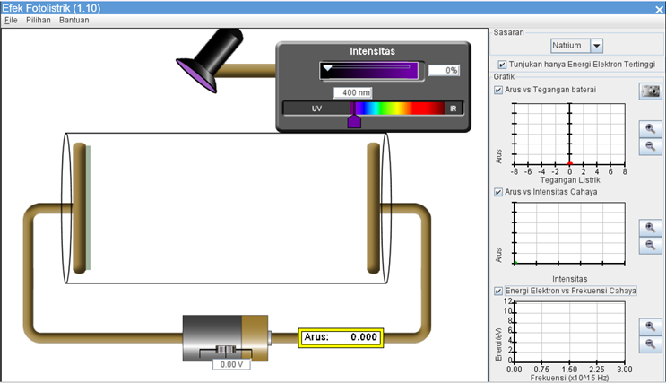

1. Pengantar
Perumusan tujuan pembelajaran menjadi langkah awal yang menentukan arah dan kualitas proses belajar-mengajar. Dalam pembelajaran Fisika, tujuan pembelajaran menggambarkan capaian yang diharapkan dari murid sekaligus menjadi dasar dalam pemilihan strategi, media, dan asesmen yang sesuai. Perkembangan teknologi pendidikan menuntut guru untuk mampu mengintegrasikan kecerdasan artifisial (KA) secara strategis agar proses pembelajaran berlangsung lebih bermakna, efisien, dan kontekstual.
Kecerdasan artifisial berperan sebagai mitra pendidik dalam memperkaya proses belajar, bukan sebagai pengganti guru. Teknologi ini dapat membantu menganalisis data pembelajaran, memvisualisasikan konsep abstrak, dan menghadirkan pengalaman belajar yang lebih interaktif. Potensi tersebut mendorong guru untuk merancang tujuan pembelajaran yang tidak hanya berorientasi pada hasil belajar kognitif, tetapi juga pada pengembangan kemampuan berpikir kritis, analitis, dan kreatif murid.
Kegiatan belajar ini mengarahkan peserta untuk mengidentifikasi kompetensi dan indikator capaian pembelajaran Fisika, lalu merumuskan tujuan pembelajaran yang sesuai dengan prinsip SMART (Specific, Measurable, Achievable, Relevant, Time-bound). Peserta juga menganalisis kesesuaian antara tujuan pembelajaran dengan pemanfaatan media berbasis KA yang dapat mendukung pencapaian tujuan tersebut.
Pemahaman terhadap prinsip perumusan tujuan dan keterkaitannya dengan teknologi KA menjadi pondasi penting bagi guru. Tujuan yang dirumuskan secara tepat akan memudahkan perancangan aktivitas belajar yang menarik dan relevan pada kegiatan belajar berikutnya.
2. Hakikat Tujuan Pembelajaran Fisika dalam Konteks Integrasi KA
Tujuan pembelajaran merupakan komponen dasar dalam perencanaan pembelajaran yang berfungsi mengarahkan seluruh proses belajar-mengajar. Arends (2012) menegaskan bahwa perumusan tujuan yang jelas membantu guru memilih strategi, metode, serta media yang paling sesuai dengan karakteristik peserta didik. Dalam konteks pembelajaran Fisika berbasis kecerdasan artifisial (KA), tujuan pembelajaran perlu disusun agar selaras dengan capaian pembelajaran yang ditetapkan oleh Badan Standar, Kurikulum, dan Asesmen Pendidikan (BSKAP, 2025) serta mampu mengakomodasi pemanfaatan teknologi sebagai sarana eksplorasi konsep dan peningkatan keterampilan berpikir ilmiah.
Penerapan KA dalam pembelajaran Fisika memberi peluang bagi guru untuk merancang pengalaman belajar yang lebih kontekstual dan interaktif. Pemanfaatan aplikasi seperti ChatGPT untuk pemodelan konsep, Canva for Education untuk pembuatan video edukatif berbasis KA, dan PhET Simulations untuk visualisasi fenomena fisika, dapat memperkuat pencapaian tujuan yang bersifat konseptual maupun prosedural.
Pemahaman tentang integrasi teknologi dalam pembelajaran telah banyak dibahas oleh Chaeruman (2005) dan Wibawanto (2019). Keduanya menyoroti pentingnya mengelola tahapan penggunaan TIK dalam pembelajaran dari tahap emerging hingga transforming agar integrasi teknologi, termasuk KA, benar-benar mendukung peningkatan kualitas proses dan hasil belajar, bukan sekadar pelengkap aktivitas kelas.
3. Prinsip Penyusunan Tujuan Pembelajaran Fisika yang SMART
Penyusunan tujuan pembelajaran yang efektif sangat penting dalam perencanaan pembelajaran Fisika. Tujuan pembelajaran yang baik harus mengacu pada prinsip SMART (Specific, Measurable, Achievable, Relevant, Time-bound) sebagaimana dijelaskan berikut ini.
- Specific (Spesifik)
Tujuan harus jelas dan tidak menimbulkan penafsiran ganda. Dalam konteks Fisika, rumusan tujuan sebaiknya menyebutkan secara spesifik konsep atau kompetensi yang ingin dicapai, misalnya "mengukur percepatan benda" atau "menganalisis hukum Newton." - Measurable (Terukur)
Tujuan harus dapat diukur keberhasilannya. Guru perlu menyiapkan indikator capaian dan alat ukur yang sesuai, baik berupa rubrik kinerja, hasil eksperimen, maupun evaluasi digital yang berbasis KA. - Achievable (Dapat Dicapai)
Tujuan harus realistis dan sesuai dengan kemampuan murid serta ketersediaan sumber belajar. Sari dan Wijaya (2023) menekankan pentingnya kesiapan guru dalam mengintegrasikan TIK melalui pelatihan dan pendampingan, agar tujuan pembelajaran tetap dapat tercapai secara optimal. - Relevant (Relevan)
Tujuan perlu selaras dengan capaian pembelajaran Fisika dan relevan dengan kehidupan nyata. Relevansi dapat diperkuat melalui penerapan konsep fisika pada konteks teknologi, energi terbarukan, atau pemanfaatan KA dalam industri sains. Prinsip relevansi juga menuntut guru untuk menyesuaikan tujuan dengan konteks murid serta kebijakan kurikulum nasional (BSKAP, 2025). - Time-bound (Berbatas Waktu)
Tujuan harus mempertimbangkan waktu yang tersedia dalam satuan jam pelajaran. Penetapan waktu yang realistis membantu guru mengukur ketercapaian tujuan dan mengelola tahapan kegiatan belajar dengan lebih efektif.
Melalui penerapan prinsip SMART, guru dapat merumuskan tujuan pembelajaran Fisika yang lebih terarah, terukur, dan berdampak nyata terhadap peningkatan kualitas pembelajaran, khususnya saat mengintegrasikan teknologi berbasis kecerdasan artifisial.
Contoh Tujuan Pembelajaran dengan Prinsip SMART:
Materi Fisika Kelas XII: Fisika Modern
- Specific: Murid mampu menjelaskan efek fotolistrik dan kaitannya dengan konsep kuantum cahaya.
- Measurable: Minimal 75% murid mampu menyelesaikan soal berbasis data eksperimen Einstein tentang fotolistrik.
- Achievable: Pembelajaran dilakukan dengan menggunakan animasi interaktif dan studi kasus Nobel Prize Einstein.
- Relevant: Materi Fisika dikaitkan dengan perkembangan teknologi sel surya.
- Time-bound: Tujuan dicapai dalam dua jam pelajaran (2 JP).
4. Teknik Mengidentifikasi Materi Fisika yang Sulit Dipahami Murid dan Berpotensi Didukung oleh Media Inovatif
Pemahaman terhadap karakteristik materi Fisika menjadi kunci dalam menentukan strategi pembelajaran yang tepat. Fisika dikenal sebagai disiplin ilmu dengan konsep-konsep abstrak yang sering kali sulit divisualisasikan oleh murid, seperti medan listrik, gelombang, gaya, atau energi potensial. Arends (2012) menjelaskan bahwa kesulitan belajar dapat muncul ketika peserta didik tidak memperoleh pengalaman konkret yang memadai untuk memahami konsep yang bersifat simbolik atau matematis.
Guru perlu menganalisis bagian-bagian materi yang berpotensi menimbulkan miskonsepsi atau hambatan belajar. Analisis tersebut dapat dilakukan melalui observasi hasil asesmen, refleksi pengalaman mengajar, maupun umpan balik murid. Berdasarkan temuan Sari dan Wijaya (2023), guru yang mampu mengidentifikasi kesulitan konsep secara dini akan lebih efektif dalam memilih pendekatan pembelajaran yang sesuai.
Media inovatif, termasuk yang berbasis kecerdasan artifisial, dapat menjadi solusi untuk menjembatani kesenjangan antara konsep abstrak dan pengalaman konkret. PhET Interactive Simulations misalnya, memungkinkan murid untuk melakukan eksperimen virtual terhadap gerak, gaya, atau gelombang, sehingga konsep yang sulit dapat divisualisasikan secara dinamis. Teknologi berbasis video generatif seperti Canva for Education juga memberi peluang bagi guru untuk membuat penjelasan visual interaktif yang dapat diakses murid kapan pun dan di mana pun.
Analisis karakteristik materi dan kesulitan belajar perlu diikuti dengan pemetaan potensi media pendukung. Pendekatan ini sejalan dengan tahapan integrasi TIK dalam pembelajaran yang dikemukakan oleh Chaeruman (2005), mulai dari tahap emerging hingga transforming, di mana guru tidak hanya menggunakan teknologi sebagai alat bantu, tetapi sebagai sarana transformasi pembelajaran.
5. Menentukan Aplikasi Kecerdasan Artifisial (KA) yang Sesuai untuk Mendukung Pencapaian Tujuan Pembelajaran
Pemilihan aplikasi KA yang tepat menjadi langkah penting setelah tujuan pembelajaran dan karakteristik materi diidentifikasi. Setiap aplikasi memiliki kekuatan dan batasan tersendiri, sehingga guru perlu menentukan kesesuaiannya dengan kompetensi yang ingin dicapai.
Aplikasi berbasis KA untuk pembelajaran Fisika dapat dikelompokkan ke dalam beberapa kategori, sebagai berikut:
- Simulasi dan eksperimen virtual,
seperti PhET Simulations yang dapat membantu murid memahami konsep gaya, energi, dan gerak. - Chatbot atau tutor digital,
seperti ChatGPT yang dapat digunakan untuk menjawab pertanyaan atau memberikan penjelasan tambahan secara interaktif. - Video dan animasi generatif,
seperti Canva for Education, yang memungkinkan guru membuat visualisasi eksperimen atau fenomena alam berbasis narasi otomatis. - Asesmen adaptif dan pembelajaran personalisasi,
seperti Curipod AI atau Quizizz AI, yang menyesuaikan tingkat kesulitan soal berdasarkan respons murid.
| Ilustrasi tentang Simulasi dan eksperimen virtual |
Ilustrasi tentang Chatbot atau tutor digital |
| Ilustrasi tentang Video dan animasi generatif |
Ilustrasi tentang Asesmen adaptif dan pembelajaran personalisasi |
Kriteria pemilihan aplikasi KA meliputi efektivitas pedagogis, kemudahan akses, kesesuaian dengan karakteristik murid, serta keamanan dan etika penggunaan data. Prinsip kesesuaian ini sejalan dengan Panduan Pembelajaran dan Asesmen BSKAP (2025) yang menekankan pentingnya pemilihan sumber belajar yang relevan, kontekstual, dan mendukung pembelajaran aktif.
Guru perlu menilai sejauh mana media berbasis KA berkontribusi terhadap pencapaian tujuan pembelajaran. Wibawanto (2019) menawarkan model evaluasi seperti SAMR (Substitution, Augmentation, Modification, Redefinition) untuk membantu guru menilai tingkat integrasi teknologi. Dalam konteks pembelajaran Fisika, penggunaan KA dikatakan bermakna apabila mampu mentransformasi cara murid memahami konsep dan berinteraksi dengan fenomena ilmiah.
6. Penyusunan Draft Modul Ajar: Tujuan Pembelajaran dan Media Berbasis Kecerdasan Artifisial
Setelah memahami prinsip SMART dan pemilihan media KA yang sesuai, guru diharapkan mampu menyusun bagian awal Modul Ajar Fisika secara sistematis. Penyusunan dilakukan dengan memadukan antara tujuan pembelajaran yang terukur, materi Fisika yang relevan, serta media berbasis KA yang mendukung ketercapaian tujuan tersebut.
Proses penyusunan draft modul ajar melibatkan langkah-langkah berikut:
Kegiatan penyusunan draft Modul Ajar ini memberikan pengalaman langsung bagi guru untuk menerapkan keterampilan perencanaan pembelajaran yang adaptif terhadap perkembangan teknologi. Rancangan Modul Ajar yang dihasilkan diharapkan mampu menumbuhkan pembelajaran Fisika yang interaktif dan kontekstual.
CONTOH MODUL AJAR FISIKA
YANG MENAMPILKAN TUJUAN PEMBELAJARAN
DAN BAGIAN MEDIA BERBASIS KECERDASAN ARTIFISIAL
|
CONTOH MODUL AJAR 1 Satuan Pendidikan : SMA A. Tujuan Pembelajaran Setelah mengikuti pembelajaran, murid diharapkan mampu:
B. Materi Pembelajaran
C. Media dan Sumber Belajar
D. Aktivitas Pembelajaran 1. Pendahuluan (10 menit)Prinsip Pembelajaran Mendalam (Berkesadaran & Bermakna)
2. Kegiatan Inti (70 menit)Prinsip Pembelajaran Mendalam (Bermakna dan Menggembirakan) Memahami Tahap 1: Orientasi Masalah
Tahap 2: Pengorganisasian Murid
Mengaplikasi Tahap 3: Investigasi Mandiri dan Kelompok
Tahap 4: Pengembangan dan Penyajian Hasil
Merefleksi Tahap 5: Analisis dan Refleksi
3. Penutup (10 menit)Prinsip Pembelajaran Mendalam (Berkesadaran & Menggembirakan)
E. Penilaian
|

|
CONTOH MODUL AJAR 2
Satuan Pendidikan : SMA
A. Tujuan PembelajaranSetelah mengikuti pembelajaran, diharapkan:
B. Materi Pembelajaran
C. Media dan Sumber Belajar
D. Aktivitas Pembelajaran1. Pendahuluan (10 menit)Prinsip Pembelajaran Mendalam ( berkesadaran & bermakna)
2. Kegiatan Inti (70 menit) Prinsip Pembelajaran Mendalam (bermakna dan menggembirakan) Memahami Tahap 1: Penentuan Pertanyaan Mendasar
Mengaplikasi Tahap 2: Mendesain Perencanaan Proyek
Tahap 3: Menyusun Jadwal
Tahap 4: Monitoring Proyek

Tahap 5: Mempresentasikan Produk
Merefleksi Tahap 6: Evaluasi dan Refleksi
3. Penutup (10 menit)Prinsip Pembelajaran Mendalam (berkesadaran & bermakna)
E. Penilaian
|